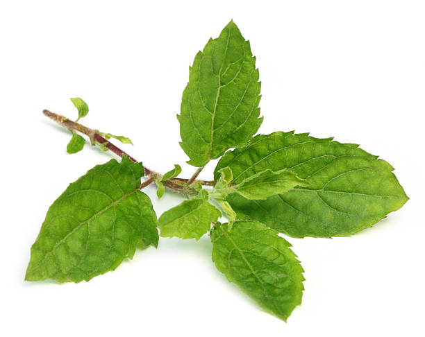
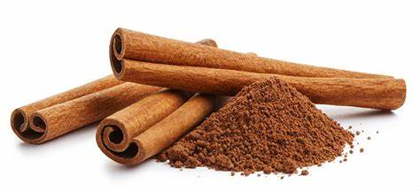

Interactive 3D Models
Tulsi (Ocimum sanctum)
Common Names: Holy Basil, Sacred Basil
Habitat: Native to India, commonly found in gardens.
Medicinal Uses: Known for its anti-inflammatory, anti-viral, and antioxidant properties.
Cultivation: Prefers warm climates and well-drained soil. Grows well in pots or garden beds.
Learn More
Ashwagandha (Withania somnifera)
Common Names: Indian Ginseng, Winter Cherry
Habitat: Native to India, grows well in arid regions.
Medicinal Uses: Adaptogen, helps reduce stress and anxiety, boosts immunity.
Cultivation: Prefers dry, well-drained soil and full sunlight.
 Learn More
Learn More
Cinnamon (Cinnamomum verum)
Common Names: Ceylon Cinnamon, True Cinnamon
Habitat: Native to Sri Lanka, thrives in tropical climates.
Medicinal Uses: Helps regulate blood sugar levels, has anti-inflammatory properties.
Cultivation: Prefers warm, humid environments with well-drained soil.
 Learn MoreCardamom (Elettaria cardamomum)
Common Names: True Cardamom
Habitat: Native to India, grows in tropical and subtropical climates.
Medicinal Uses: Supports digestive health, has antimicrobial properties.
Cultivation: Requires a moist, tropical climate and well-drained soil.
 Learn More
Learn More
Clove (Syzygium aromaticum)
Common Names: Clove Buds
Habitat: Native to Indonesia, thrives in tropical climates.
Medicinal Uses: Used for pain relief, has antibacterial and antioxidant properties.
Cultivation: Prefers warm, humid conditions with rich, well-drained soil.
 Learn More
Learn More